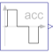

KinematicPTPMove as fast as possible along a distance within given kinematic constraints |

|
Information
This information is part of the Modelica Standard Library maintained by the Modelica Association.
The goal is to move as fast as possible along a distance deltaq under given kinematical constraints. The distance can be a positional or angular range. In robotics such a movement is called PTP (Point-To-Point). This source block generates the acceleration qdd of this signal as output:

After integrating the output two times, the position q is obtained. The signal is constructed in such a way that it is not possible to move faster, given the maximally allowed velocity qd_max and the maximally allowed acceleration qdd_max.
If several distances are given (vector deltaq has more than 1 element), an acceleration output vector is constructed such that all signals are in the same periods in the acceleration, constant velocity and deceleration phase. This means that only one of the signals is at its limits whereas the others are synchronized in such a way that the end point is reached at the same time instant.
This element is useful to generate a reference signal for a controller which controls a drive train or in combination with model Modelica.Mechanics.Rotational.Accelerate to drive a flange according to a given acceleration.
Parameters (5)
| nout |
Value: max([size(deltaq, 1); size(qd_max, 1); size(qdd_max, 1)]) Type: Integer Description: Number of outputs |
|---|---|
| deltaq |
Value: {1} Type: Real[:] Description: Distance to move |
| qd_max |
Value: {1} Type: Real[:] Description: Maximum velocities der(q) |
| qdd_max |
Value: {1} Type: Real[:] Description: Maximum accelerations der(qd) |
| startTime |
Value: 0 Type: Time (s) Description: Time instant at which movement starts |
Connectors (1)
| y |
Type: RealOutput[nout] Description: Connector of Real output signals |
|---|
Used in Examples (1)
|
Modelica.Blocks.Examples Demonstrates the usage of a Continuous.LimPID controller |